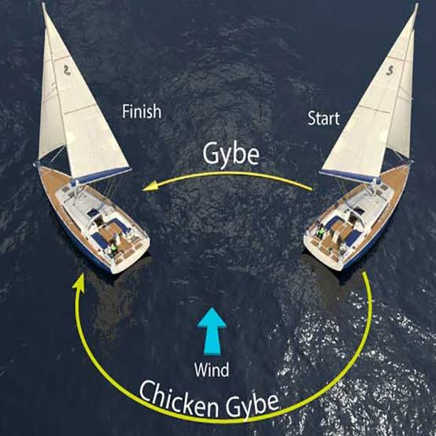

Module 6
Gybing
A gybe (also spelled jibe) is the maneuver used to change direction while sailing downwind. During a gybe, the stern passes through the wind and the boom swings from one side of the boat to the other.
Learning Objectives
- Understand when to use a gybe.
- Perform a controlled gybe safely.
- Maintain balance throughout the maneuver.
- Recognize and avoid common mistakes.
When Do You Gybe?
A gybe is performed when sailing on a broad reach or a run and you want to change from one tack to the other. Unlike a tack, the bow does not pass through the wind. Instead, the stern crosses the wind.
The Chicken Gybe
In light to moderate winds, a normal gybe is usually safe when performed correctly. However, in stronger winds, the boom can swing across the boat with tremendous force.
A Chicken Gybe is a safer alternative for beginners. Instead of gybing directly, the sailor turns the boat upwind, performs a normal tack, and then bears away onto the new downwind course.
Although it takes a little longer, a Chicken Gybe greatly reduces the risk of injury, accidental capsize, and damage to the boat.
Step-by-Step Gybe
1. Prepare
Check that the area around you is clear of other boats and obstacles. Sit in a stable position and keep one hand on the tiller extension and the other on the mainsheet.
2. Trim the Sail In
Pull the mainsheet in before starting the gybe. This reduces the distance the boom must travel and helps make the maneuver more controlled.
3. Turn the Boat
Push the tiller gently to turn the stern through the wind. Avoid sudden steering movements.
4. Duck Under the Boom
As the boom begins to cross the boat, duck underneath it while keeping your balance. Switch sides smoothly.
5. Settle on the New Course
Ease the mainsheet to match your new point of sail, center the tiller, and check that the boat is sailing steadily.

Tips for a Smooth Gybe
- Look where you want the boat to go.
- Steer gradually rather than sharply.
- Trim the sail in before the boom crosses.
- Keep your movements smooth and balanced.
- Always watch the boom.
Common Mistakes
Turning Too Fast
A rapid turn causes the boom to swing violently, making the boat unstable.
Forgetting the Boom
Failing to watch the boom can result in injury. Always duck as it crosses the boat.
Key Takeaways
- A gybe changes direction while sailing downwind.
- The stern passes through the wind.
- Trim the sail in before the gybe.
- Move smoothly and stay balanced.
- Always keep track of the boom for safety.